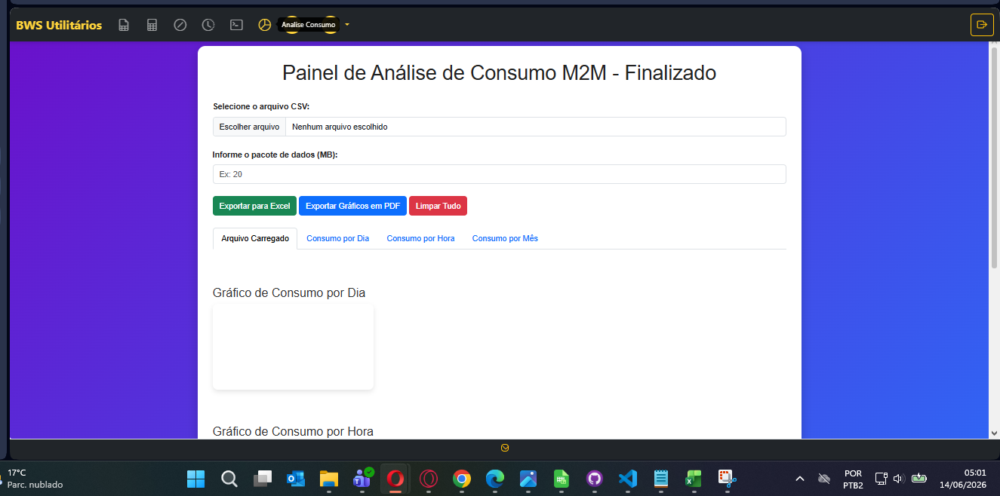
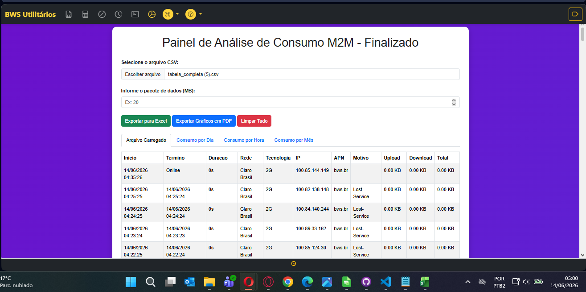
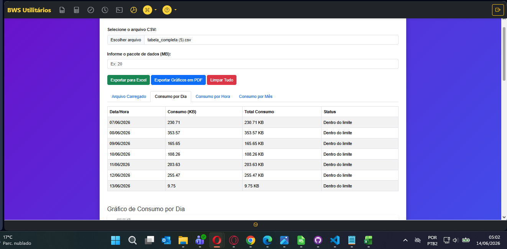
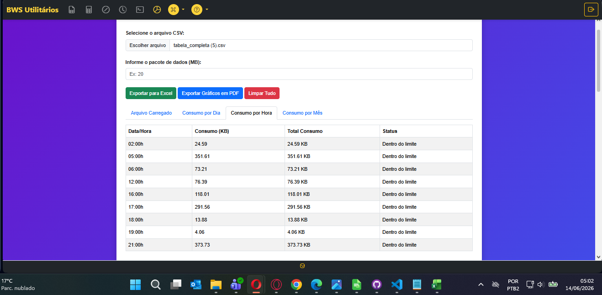
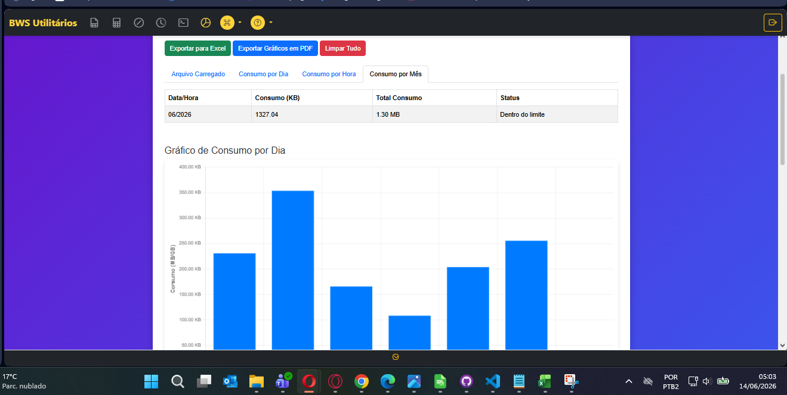
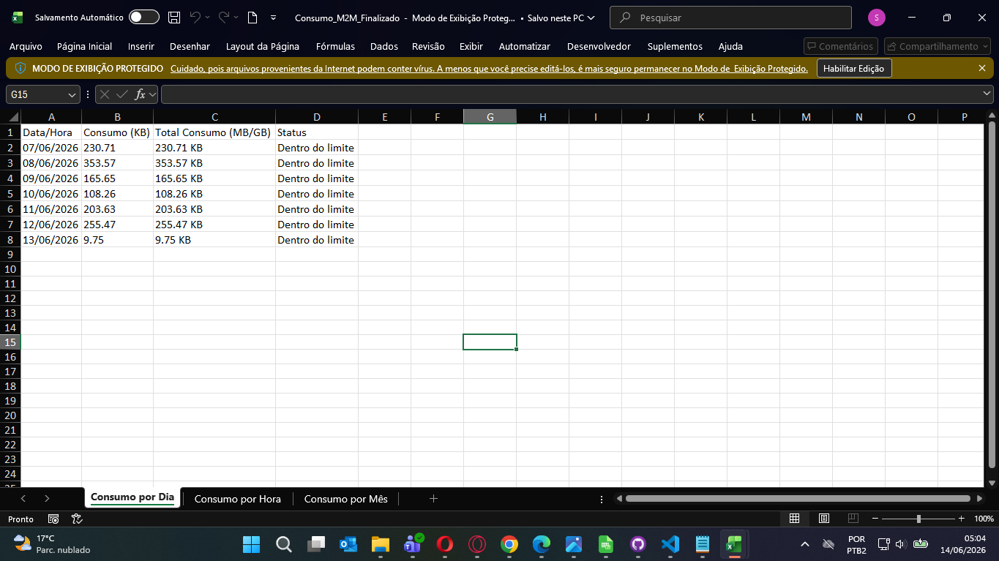
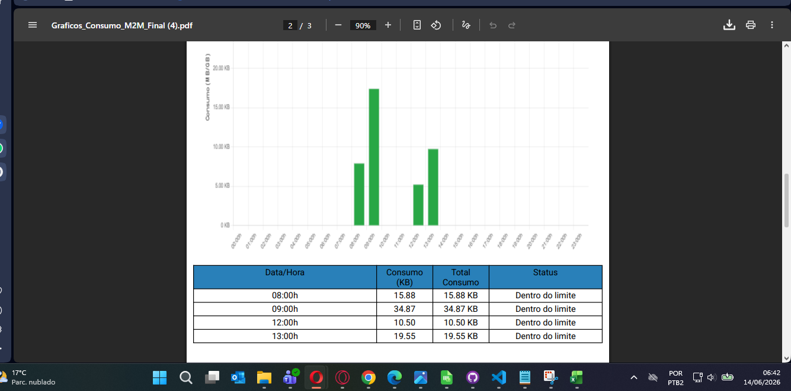

Analise o consumo de dados por dia, hora e mês em kbit (quilobit) e Mb (megabit), compare com o pacote do cliente e identifique picos de utilização.
Mesmo CSV da Análise de Conexões
A ferramenta utiliza o mesmo arquivo CSV baixado para análise de conexões. Os dados são exibidos em kbit (quilobit) e Mb (megabit). O sistema está padronizado com pacote de 20 Mb para cálculo de consumo normal.

Na tela principal da ferramenta, faça o upload do mesmo CSV baixado para análise de conexões. O sistema analisará o consumo de dados por dia, hora e mês, mostrando os valores em kbit (quilobit) e Mb (megabit) para verificar se o consumo está normal.

Após carregar os dados, você pode navegar entre as três abas de consumo para verificar os consumos nos períodos escolhidos. O sistema compara com o pacote de dados da linha (padrão 20 Mb) para saber se o consumo está normal e identifica os dias em que os dados foram ultrapassados.
Todos os valores são exibidos em kbit (quilobit) e convertidos para Mb (megabit) quando aplicável

A aba de consumo por dia mostra o total de dados consumidos em cada dia do período selecionado. Os valores são exibidos em kbit (quilobit) e Mb (megabit), permitindo identificar facilmente os dias de pico de consumo.
Média Diária
10,240 kbit
(10 Mb)
Pico Máximo
30,720 kbit
(30 Mb)
Acima do Pacote
5 dias
(acima de 20 Mb)

A aba de consumo por hora detalha o uso de dados em intervalos horários, medidos em kbit, permitindo identificar padrões de comportamento e horários de maior consumo.
Exemplo: 18:00-21:00 apresenta pico de 20,480 kbit (20 Mb)

Logo abaixo do consumo por mês, é possível visualizar os gráficos interativos que auxiliam na análise do consumo, permitindo identificar tendências e anomalias no uso de dados. Os gráficos são plotados em kbit/segundo para maior precisão.
Evolução do Consumo (kbit)
Distribuição por Horário (Mb)
A aba de consumo por mês consolida todo o consumo do período mensal

É possível exportar os dados de consumo em Excel para todos os períodos. O arquivo gerado possui abas separadas com valores em kbit e Mb para:
Conversão: 1 Mb = 1,024 kbit

O relatório PDF inclui todas as tabelas e gráficos de consumo por dia, hora e mês, com valores em kbit e Mb, facilitando o compartilhamento com a equipe ou clientes. O exemplo mostra um dos gráficos presentes no relatório final.
Dica: Utilize os relatórios para monitorar o consumo mensal e identificar clientes que excedem o pacote contratado (padrão 20 Mb ou 20,480 kbit).
1. Upload
CSV de conexões
2. Análise
Dia, Hora, Mês
3. Gráficos
kbit / Mb
4. Excel
Dados por aba
5. PDF
Relatório completo
Padrão de Pacote de Dados
O sistema está padronizado com o tamanho de 20 Mb (equivalente a 20,480 kbit) para cálculo de consumo normal. Caso o cliente possua pacote de 50 Mb, é possível ajustar manualmente a referência de comparação.
Análise de Consumo de Dados · Saitro